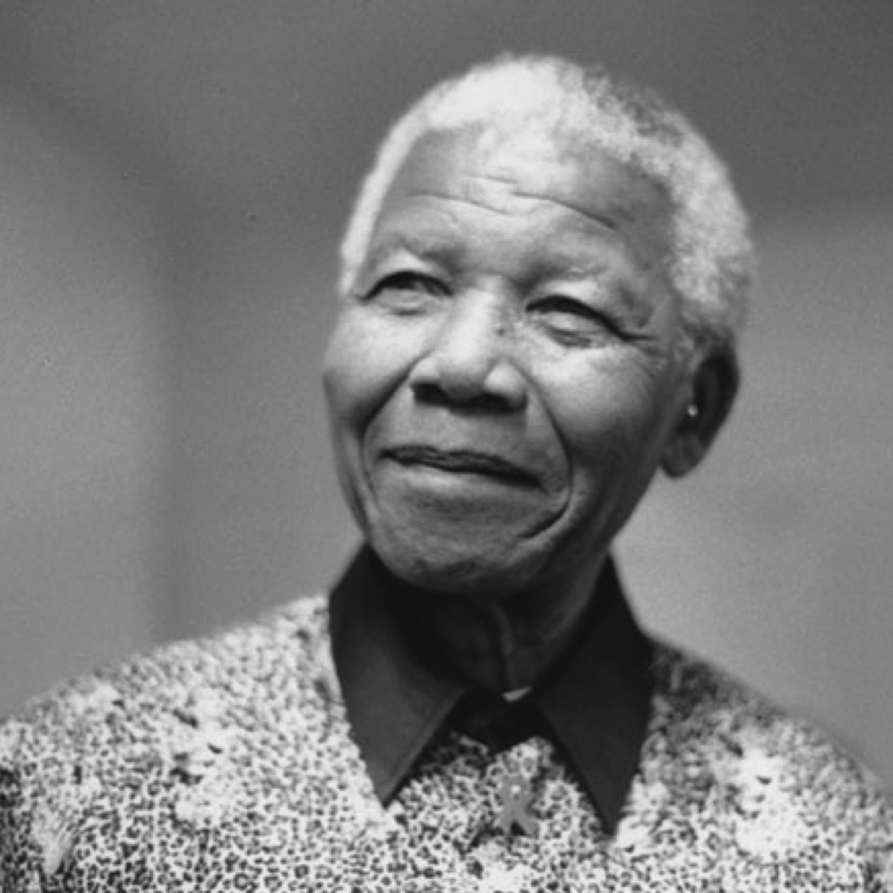

Nelson Mandela

Nelson Rolihlahla Mandela was a South African anti-apartheid revolutionary,
statesman and philanthropist
who served as President of South Africa from 1994 to 1999.
He was the country's first black head of state
and the first elected in a fully representative democratic election
Here's a time line of Nelson Mandelas life life:
- 1918- Born in the Mvezo village of Umtata of South Africa's Cape province
- 1933 -Mandela began his secondary education at Clarkebury Methodist High School
in Engcobo, a Western-style institution that was the largest school for Black Africans in Thembuland. - 1937- moved to Healdtown, the Methodist college in Fort Beaufort attended by most Thembu royalty
- 1939-Mandela began work on a BA degree at the University of Fort Hare, an elite Black institution in Alice,
Eastern Cape, with around 150 students. - 1940-Returning to Mqhekezweni he found out that Jongintaba had arranged marriages for him and Justice;
dismayed, they fled to Johannesburg via Queenstown, arriving in April 1941 - 1943-He Passed his BA exams in the early 1943s
- 1943-Mandela began studying law at the University of the Witwatersrand, where he was the only black African
student and faced racism - 1944-Mandela became an executive committee member of the African National Congress Youth League (ANCYL)
was founded on Easter Sunday 1944 in the Bantu Men's Social Centre.
Mandela met Evelyn Mase, a trainee nurse and ANC activist from Engcobo, Transkei. Entering a relationship and
marrying in October 1944 - 1945-Got his first child Madiba in Febuary
- 1946-Rented a house in the townshipof orlando
- 1947- Mandela rushed Lembede, who was ill, to hospital, where he died
- 1950-Mandela took Xuma's place on the ANC national executivein march and that same year was elected national
president of the ANCYL. - 1952Mandela began work at the H.M. Basner law firm, which was owned by a communist,[78] although his increasing
commitment to work and activism meant he spent less time with his family. - 1955–1961-Congress of the People and the Treason Trial
- 1961–62-MK, the SACP, and African tour:
- 1962–1964Arrest and Rivonia trial
- 1964–1982In 1964, Mandela and his co-accused were transferred from Pretoria to the prison on Robben Island,
remaining there for the next 18 years - 1982–1988 Mandela was transferred to Pollsmoor Prison in Tokai, Cape Town, along with senior ANC leaders
Walter Sisulu, Andrew Mlangeni, Ahmed Kathrada, and Raymond Mhlaba - 1988–1990Victor Verster Prison and release
- 1991–92The Convention for a Democratic South Africa (CODESA) began in December 1991 at the Johannesburg
World Trade Centre - 1994-General election
If you have time, you should read more about this incredible human being on his Wikipedia entry.